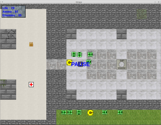
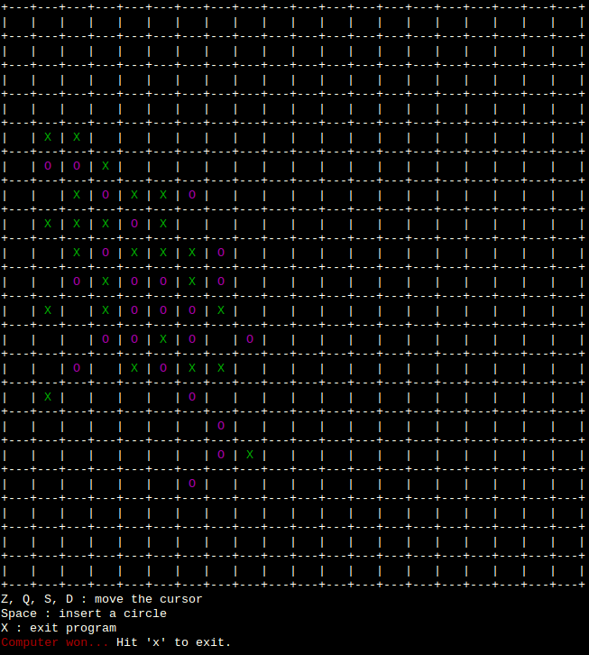
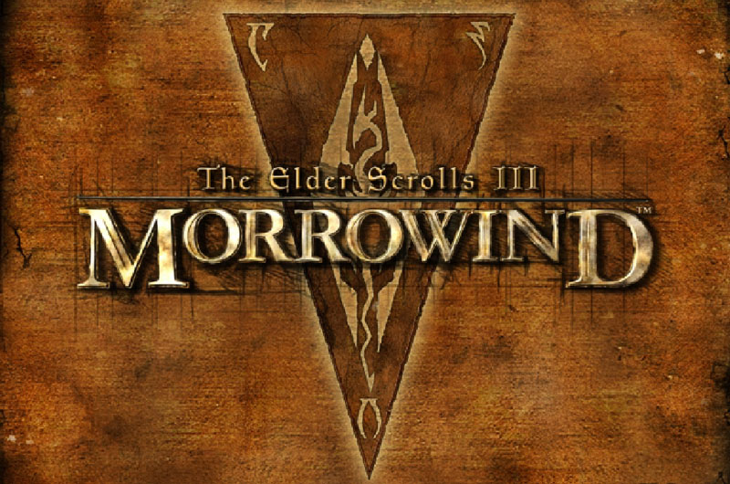
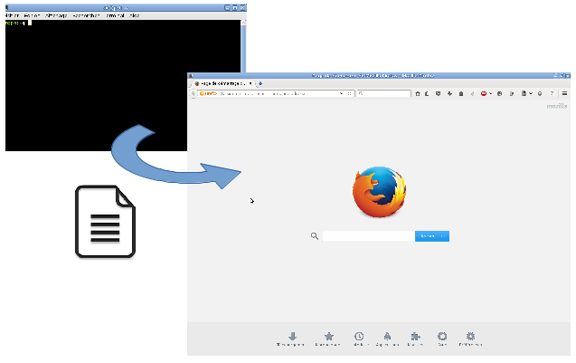
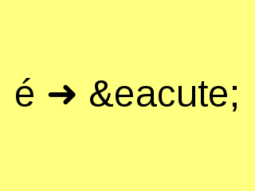
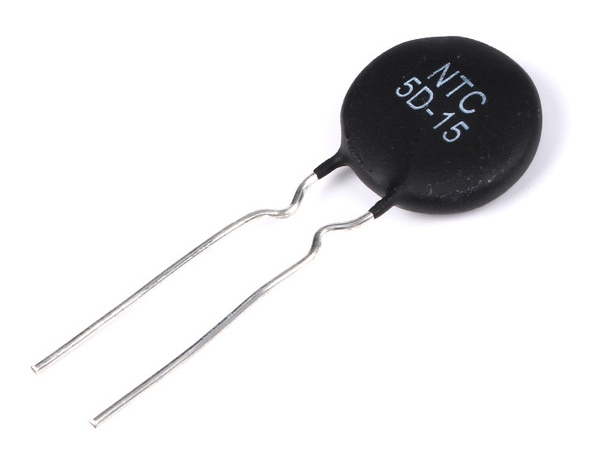

Page d'accueil
Curriculum Vitae
Electronique
Informatique
Liens
Jeux

Jeu de chars 2D écrit en C++ et utilisant SDL2

Jeu du morpion revisité

Jouer à d'anciens jeux en plein écran sous Windows 10
Solveur de sudoku très simple utilisant la force brute
Utilitaires
Bibliothèque Linux/Windows pour accéder facilement aux ports série
Compresseur/optimiseur de fichiers CSS ultra rapide écrit en C

Partagez simplement des fichiers entre deux ordinateurs

Utilitaire pour transformer les accents d'une page web en codes HTML
Utilitaire pour charger à 100% un nombre précis de CPUs d'un PC

Utilitaire pour précalculer les tables de température d'une thermistance
Affiche en temps réel le débit de toutes les interfaces réseau Linux